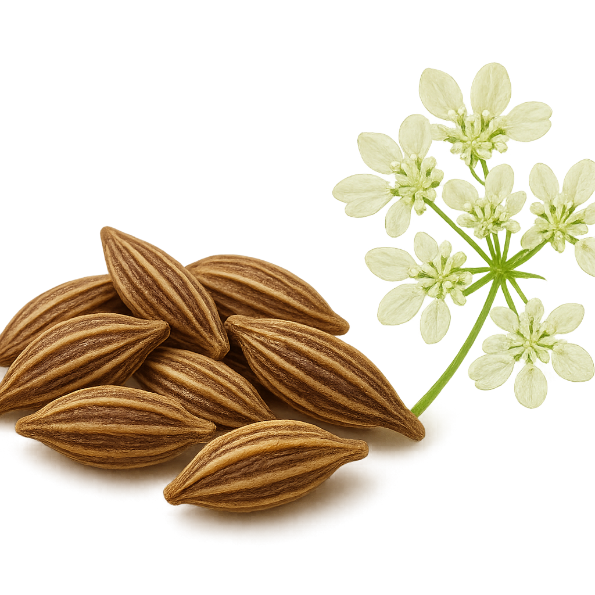
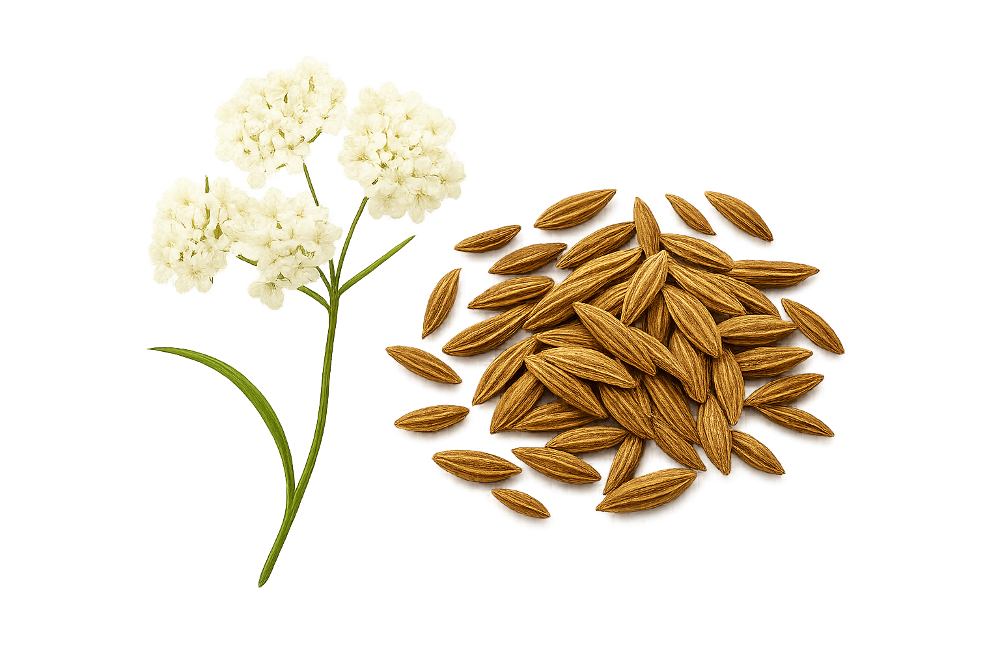
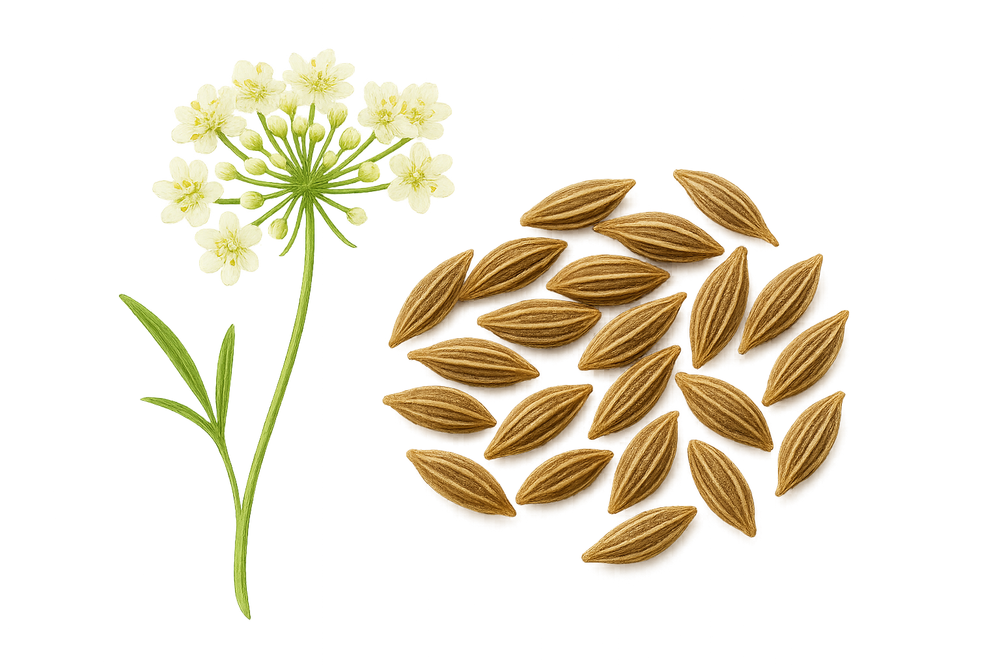
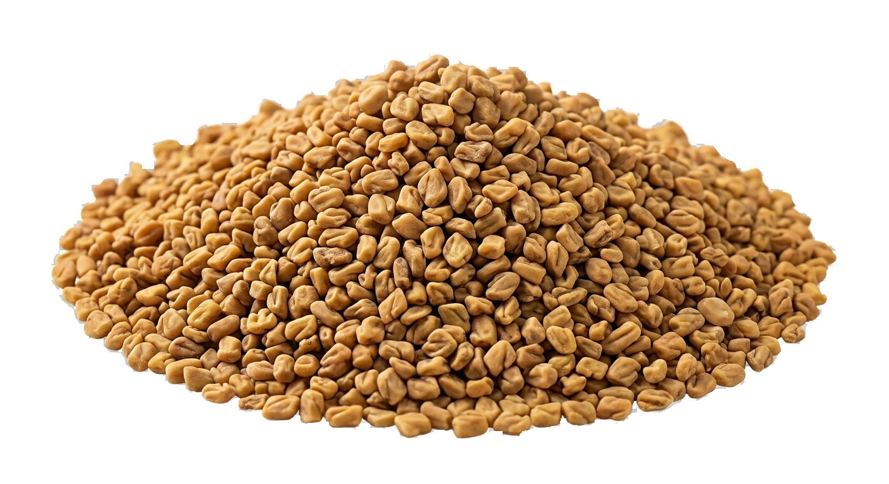
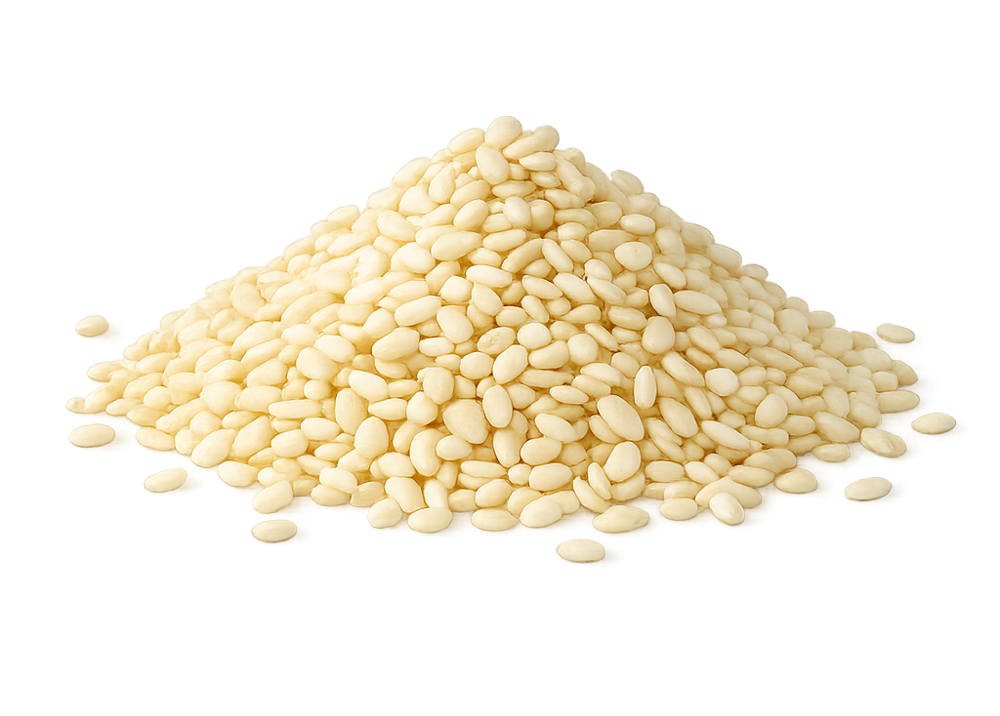

Disclaimer: Product images are for illustrative purposes only and may not represent the exact appearance or quality of purchased goods.
Aromatic Seeds
Aromatic seeds are prized for their concentrated essential oils and distinctive scents, playing a key role in culinary, medicinal, and wellness applications through their rich flavors and therapeutic properties.

Fennel

Coriander

Caraway

Cumin

Anise
Black Cumin

Fenugreek
